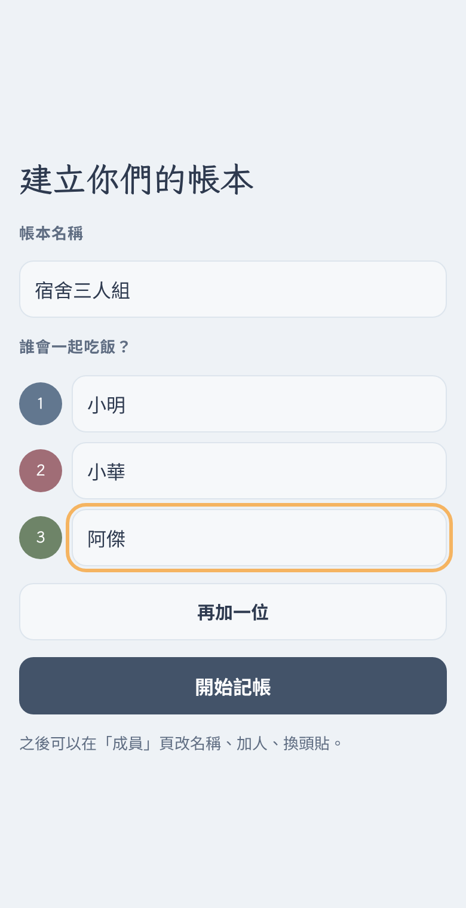
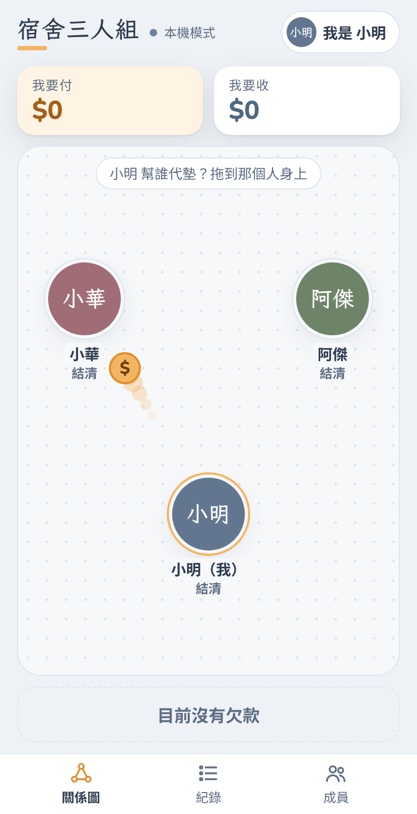
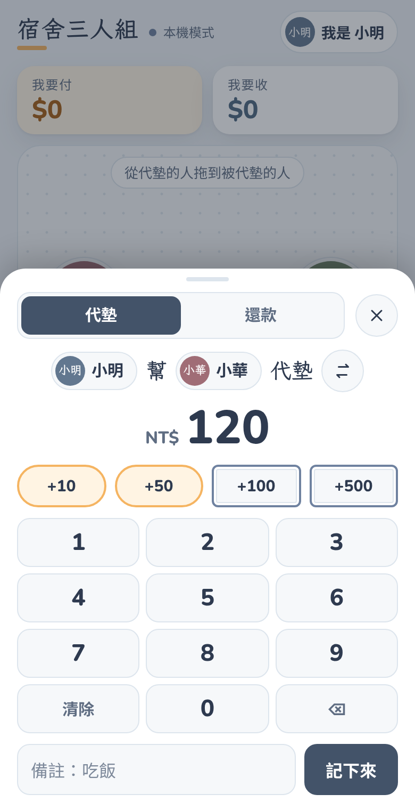
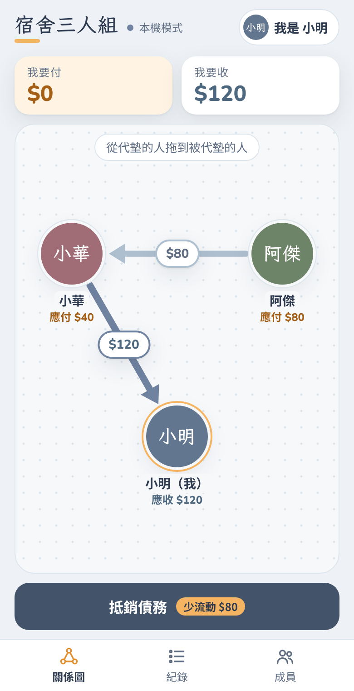
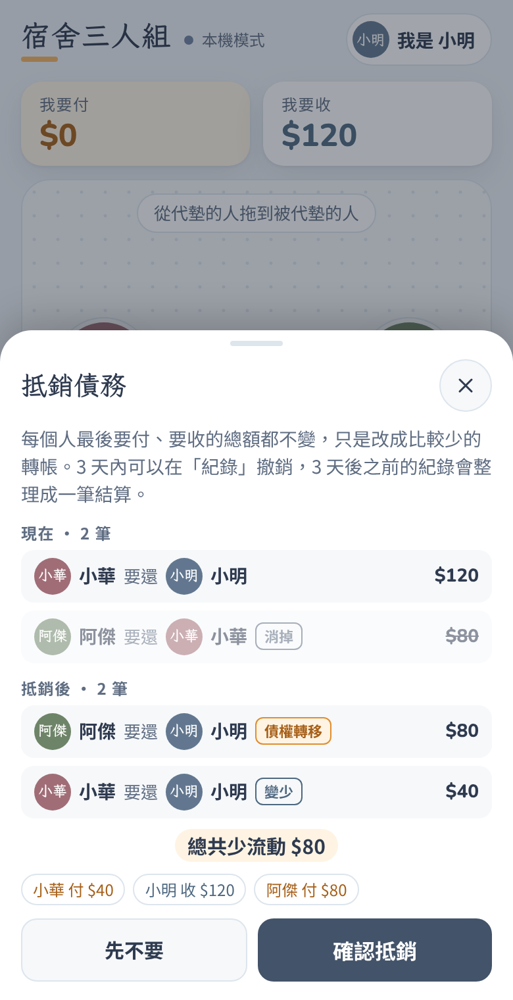

教學
使用教學
從建立帳本到一鍵抵銷，五分鐘學會。
在 GitHub Pages 上打開時，帳本是本機模式：資料只存在這支手機的瀏覽器。在 claude.ai 打開同一個 App，則會用共享資料庫，朋友的手機會即時同步。
1. 建立帳本
第一次打開 記帳 App，輸入帳本名稱（可以留白，預設叫「飯友帳本」）和一起吃飯的人。最少兩個人、最多八個人。

接著選「你是哪一位」。這只記在你自己的手機上，用來顯示「我要付、我要收」。
2. 記一筆代墊
誰先幫誰付了錢，就按住代墊的人，把拉出來的硬幣拖到被代墊的人身上放開。

放開後輸入金額。可以用 +10、+50（硬幣）和 +100、+500（鈔票）快速加總，再按「記下來」。

不想拖曳的話，先點代墊的人、再點被代墊的人也可以。
3. 看懂關係圖
箭頭代表誰要給誰錢，箭頭上的數字是金額。杏橘色是你要付的、藍灰色是你要收的、淺灰色是別人之間的。

4. 還錢
點箭頭上的金額，會打開兩人之間的明細，只列出還沒還的部分。可以按「全部還清」或「還一部分」。
5. 抵銷債務
三個人互相欠來欠去時，「抵銷債務」按鈕會亮起來，並寫著可以少轉幾筆。按下去會先看到抵銷前後的比較，確認後才會改帳。每個人最後要付、要收的總額都不變。原理請看 抵銷怎麼算。

抵銷 3 天內可以在「紀錄」撤銷；滿 3 天後，之前的紀錄會自動整理成一筆「結算」。
6. 備份（本機模式）
到「成員」頁按「匯出備份」，會下載一個 JSON 檔。換手機時在新手機按「匯入備份」就能還原。